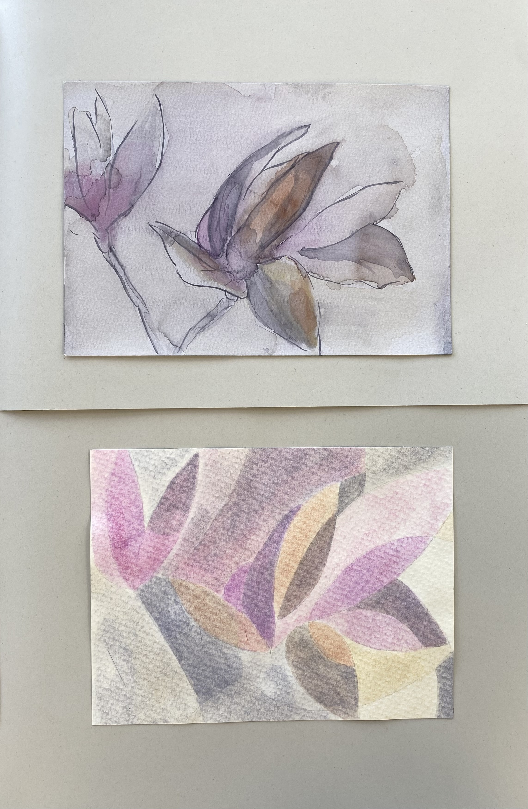
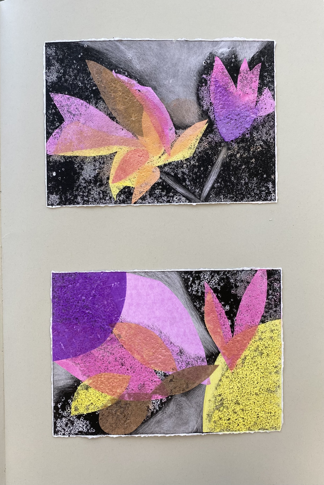
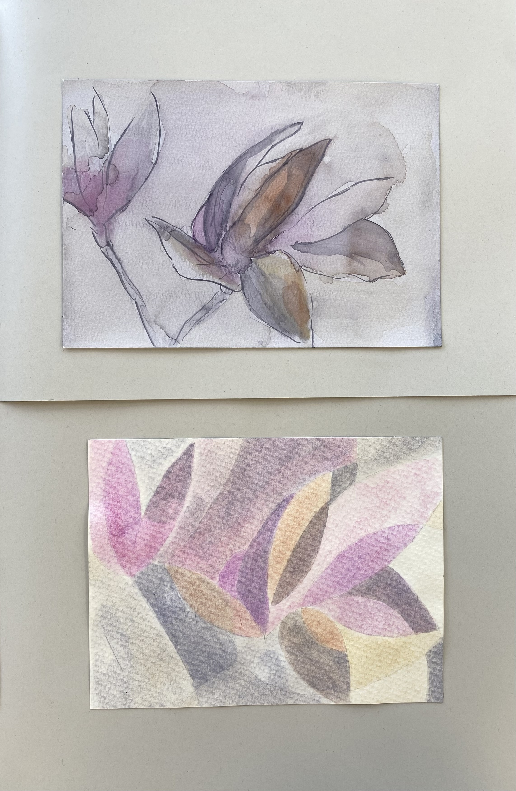
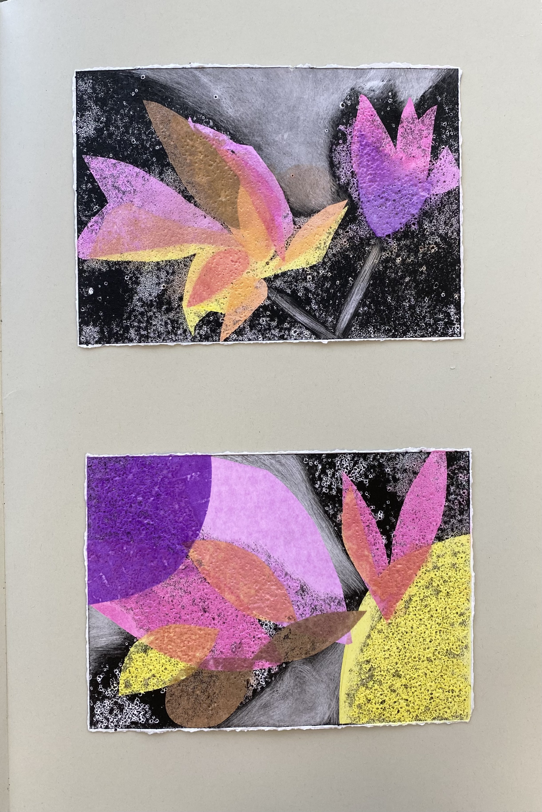

Edición final – Taller Luz y Color
Proyecto final del Taller Luz y Color 2024. Esta edición se centra en la experimentación con el color a través de la superposición de transparencias y filtros de color, buscando generar mezclas lumínicas, yuxtaposición y texturas, explorando sus efectos sensoriales y emocionales.
Ver proyecto en WikiCasiopea: Ir a la wiki
 


